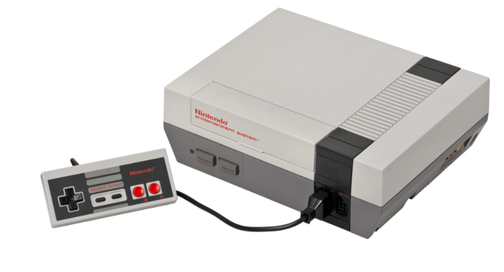
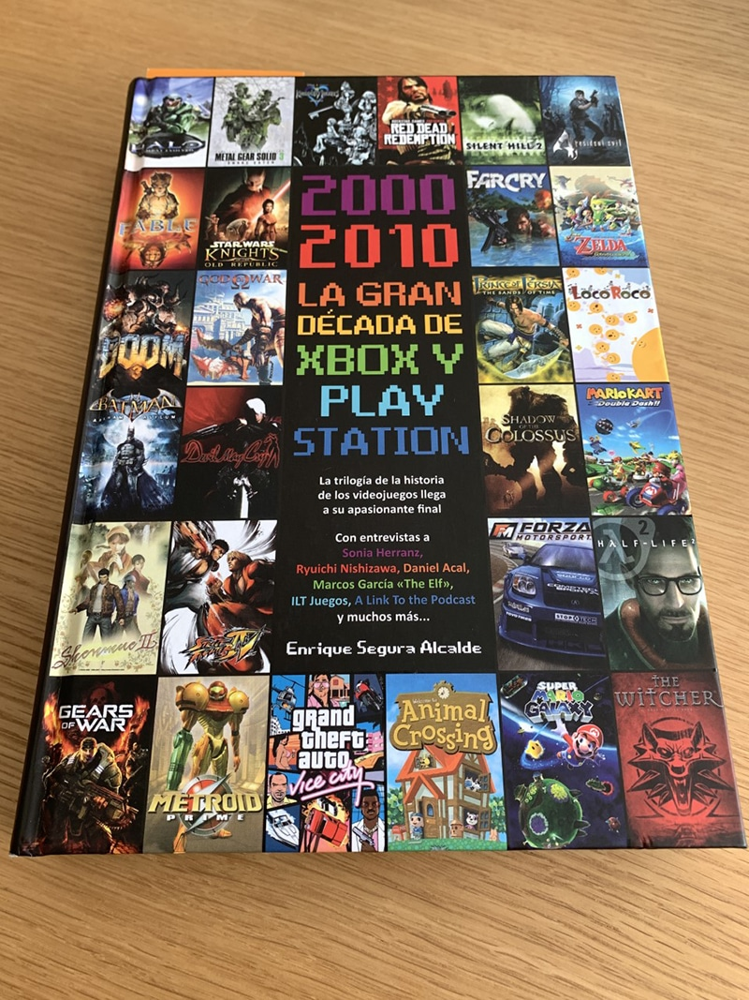

Historias de video juegos
Se jugaba en máquinas arcade en los años 70 (máquinas grandes que estaban en centros comerciales y salones de juegos). Las personas debían introducir una moneda para poder jugar.
- Decada de 1970-Arcade
- Decada de 1980-consolas domesticas
- Decada de 2000-Juegos online
- Evolucion de los video juegos
Los videojuegos de arcade o arcadia 3 son un tipo de videojuegos que originalmente fueron concebidos para las máquinas recreativas (también denominadas «máquinas de arcade») que desde inicios de los años 1970 fueron progresivamente introduciéndose y desbancando, en gran medida, a los juegos electromecánicos en lugares como centros comerciales, restaurantes, bares y salones recreativos especializados.Hoy en día el término «arcade» es un término genérico que se utiliza para designar un estilo o categoría de videojuegos, incluso aunque dichos videojuegos ya no sean utilizados en máquinas recreativas sino a nivel doméstico en plataformas como consolas o el PC.

La década de 1980 fue el periodo más transformador para las consolas domésticas, marcado por el dominio inicial de Atari, una crisis devastadora en 1983 y el posterior renacimiento liderado por las compañías japonesas. A principios de la década de 1980, las máquinas recreativas eran una industria vibrante. Tan solo en Estados Unidos, la industria de los videojuegos recreativos generaba 5 mil millones de dólares en ingresos anuales en 1981 y el número de salas recreativas se duplicó entre 1980 y 1982. El efecto de los videojuegos en la sociedad se extendió también a otros medios, como las grandes películas y la música. En 1982, « Pac-Man Fever » entró en las listas Billboard Hot 100 y Tron se convirtió en un clásico de culto .
La década de 2000 fue la cuarta década en la historia de la industria . Fue una década dominada principalmente por Sony , Nintendo , la recién llegada Microsoft y sus respectivas consolas. Sega , principal rival de Nintendo en las décadas de 1980 y 1990, abandonó el mercado de las consolas en 2001 para volver al desarrollo de terceros, como antes. En general, la década vio el último de los polígonos tridimensionales de baja resolución de la década de 1990 con la aparición de los juegos de alta definición , y a menudo se centró en el desarrollo de entornos inmersivos e interactivos, la implementación de física realista y la mejora de la inteligencia artificial . Salieron a la venta la sexta y la séptima generación de consolas de videojuegos, incluidas la PlayStation 2 , Xbox , GameCube , Xbox 360 , PlayStation 3 , Wii , Game Boy Advance , Nintendo DS y PlayStation Portable . Los juegos notables lanzados en la década del 2000 incluyen Grand Theft Auto III , Grand Theft Auto: Vice City , Grand Theft Auto: San Andreas , Halo: Combat Evolved , Halo 2 , Wii Sports , Half-Life 2 , The Elder Scrolls IV: Oblivion , BioShock , World of Warcraft , Los Sims , Super Smash Bros. Melee , Resident Evil 4 , The Legend of Zelda: The Wind Waker , The Legend of Zelda: Twilight Princess , Metal Gear Solid 2: Sons of Liberty , Metal Gear Solid 3: Snake Eater , Call of Duty 4: Modern Warfare , Portal , Shadow of the Colossus , Gears of War , God of War , Super Mario Galaxy , Uncharted 2: Among Thieves y League of Legends .
¿Cómo ha crecido el sector de los videojuegos?
La industria de los videojuegos está viviendo un crecimiento exponencial en todo el mundo y ya factura 147 mil millones de euros, lo que representa un 20 % más que en 2019. De hecho, el gasto en videojuegos por el móvil representa 86 mil millones de euros, sacando ventaja a los 51 mil millones de las consolas. Por supuesto, este sector no para de generar empleo, demandando profesionales cada vez más especializados. Se espera que los 7.993 millones de euros destinados al empleo en 2021 se conviertan en 8.480 millones en 2023. España ya se encuentra dentro de los diez primeros países que dominan el mercado de los videojuegos, con más de 650 estudios en activo. Sin embargo, si quieres trabajar en este sector, debes contar con un grado o especialización.